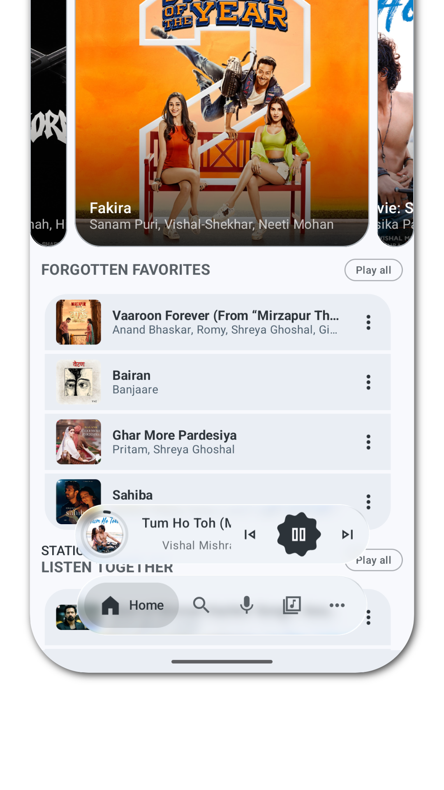
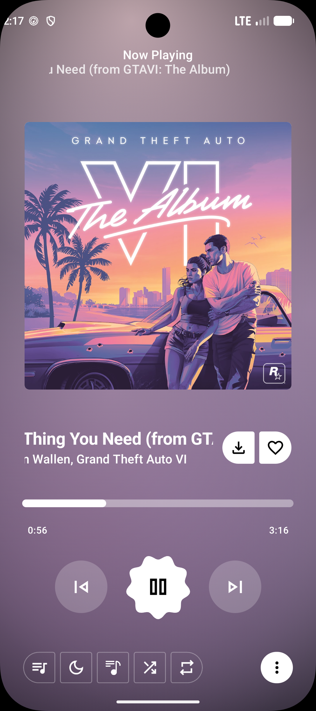

Echo Music 深度拆解：为什么它能把 Android 音乐播放做到 Bit-perfect
Echo Music 在 Android 上实现 Bit-perfect USB DAC 输出、Liquid Glass GPU 渲染和 Echo Brain 推荐引擎的技术原理，以及这套设计背后的取舍。
一个"不应该存在"的问题
Android 上做音乐播放器，有一个从上古时代就没解决干净的问题：为什么外接 DAC 听起来总差点意思？
普通用户不会去追究，但发烧友会。他们花几千块买个 Fiio 或 Topping 的小尾巴，插上手机，听了两年才知道——整个 Android 音频框架（AudioFlinger）在出厂时就偷偷做了一件事：把所有音频强制重采样到 48kHz 再送出去。不管你的音源是 44.1kHz（CD）、96kHz 还是 192kHz，进系统那一刻就被"降格"了。
这不是 bug，是 Android 为了统一音频输出路径做的设计——但对高保真来说，这是不可接受的信号损失。桌面端的 Foobar2000 能绕过系统重采样做到 Bit-perfect，为什么手机上不行？
Echo Music 选择正面硬刚这个问题。它在播放引擎里做了一层绕过 Android 重采样的直通通道，让音源的每一个 bit 原封不动地送到 DAC。这个"不应该存在"的功能，恰恰是它最核心的技术壁垒之一。
Bit-perfect 直通：和 Android 系统打架的艺术
要理解 Echo Music 的 Bit-perfect 实现，得先搞清楚 Android 音频输出的标准路径是什么样的。
正常流程是这样：播放器解码音频文件 → 把 PCM 数据交给 AudioTrack → AudioTrack 送进 AudioFlinger → AudioFlinger 重采样到 48kHz → 输出到扬声器或 USB DAC。整个链条里，AudioFlinger 的重采样是无法跳过的——它是系统级的音频调度器，所有 App 的音频都必须经过它。
Echo Music 的解法很直接：不走常规路径。它利用了 Android 7.0 之后暴露的一个接口——AudioTrack.setNativeOutputSampleRate()——这个 API 允许 App 告诉 AudioFlinger："我就要用这个采样率输出，别给我重采样"。配合 AudioTrack.MODE_STATIC 模式，Echo Music 可以把解码后的 PCM 数据以音源的原生采样率直接推给 USB DAC，中间没有任何 DSP 处理。
具体链路拆解：
- 自动检测 USB DAC：插上后读取 USB Audio Class（UAC）描述符，确认设备支持的采样率档位
- 匹配原生采样率：从音频文件的元数据里读出它的原始采样率（44.1kHz / 96kHz / 192kHz 等）
- 直接以该采样率打开 AudioTrack：调用
setNativeOutputSampleRate()，绕过系统重采样 - DAC 端自动适配：好的 DAC 支持多采样率切换，收到什么就解什么
这一套做下来，Echo Music 在 Android 上实现了和桌面端 MPD / Foobar2000 同等的 Bit-perfect 输出。验证方法也很硬核：对比 DAC LED 显示的采样率和音源原始采样率，两者一致就是真的 Bit-perfect。要深入了解这套机制的参数细节，可以翻它的Echo Music文档。
但这条路不是没有代价。Bit-perfect 的核心逻辑是"不做任何处理"——这意味着一旦你打开均衡器，DSP 处理会改变采样率，Bit-perfect 会自动关闭。EQ 和 Bit-perfect 是不可妥协的互斥关系，发烧友必须二选一。另外，蓝牙本身有编码压缩（哪怕是 LDAC 也只是近无损），Bit-perfect 只对 USB 有线输出有效。
Liquid Glass：用 Canvas 做"会呼吸"的界面
如果说 Bit-perfect 是对音质的硬追求，Liquid Glass 主题就是对视觉体验的软打磨。Echo Music 花了不少功夫在它的歌词动画和封面渲染上——四种歌词动画样式、Canvas 波形效果、玻璃拟态视差……这些不是花哨，而是一个设计取舍的结果。
歌词动画的底层引擎是 GPU 加速的 Canvas 渲染。开发者特意强调这一点，是因为很多音乐播放器在做类似效果时会犯一个错误：用 CPU 做动画，结果是播放时手机发热、耗电翻倍。Canvas 把渲染任务交给 GPU 并行处理，和系统级动画走同一条管线，对电量和 CPU 的额外消耗几乎可以忽略。
四种动画样式各有侧重：标准滚动是最克制的默认选项；Liquid Glass 把歌词放在半透明玻璃底板上，底板颜色随专辑封面变化，上下滑动时有细腻的视差；Apple Inspired 模拟 Apple Music 的效果——当前行变成纯白色大卡片居中弹出，其他行缩在两侧；Scrolling 则是快速浏览时的联动变体，封面收缩、玻璃层放大。
这些选项不是为了让用户"选好看的"，而是为了覆盖不同场景：想专心听歌看歌词用标准滚动；想让界面变成装饰品用 Liquid Glass；想在朋友面前秀一下用 Apple Inspired。每种样式和 UI 主题有耦合关系——Material 3 主题只有标准滚动，Liquid Glass 主题才有全部选项，这是刻意的设计边界，不是 bug。
Echo Brain：不只是推荐，是理解你的聆听习惯
Bit-perfect 管音质，Liquid Glass 管颜值，那 Echo Brain 管的是"你接下来想听什么"。
Echo Music 的曲库来自 YouTube Music，这是一个体量极大的池——光靠排行榜和曲风分类去翻，很容易迷路。Echo Brain 做的事是：从你的聆听历史里提取模式，然后在 Smart Queue 里做预判式推荐。
举个例子：如果你在"摇滚"曲风频道里完整听完了十首歌，下次进首页时 Smart Queue 会自动往你的队列里插更多摇滚。如果你连续几个晚上睡前都在听 Lo-Fi，"睡前助眠"频道里的歌会越来越对你的口味。这不是静态歌单——它是动态替换的。
浏览频道（排行榜 / 曲风 / 心情）和 Echo Brain 之间的关系是双向的：你主动点进去听的歌会进入聆听历史，影响后续推荐；而 Echo Brain 学到的偏好又会反哺到心情频道的动态调整里。这套闭环让 Echo Music 在"我想找歌"和"歌来找我"之间形成了比较好的平衡。
取舍：它适合谁、不适合谁
看完这些技术细节，其实 Echo Music 的定位已经很清晰了——它服务的是愿意为音质和体验多走一步的用户。
如果你是一个发烧友，已经有了 USB DAC、在意 Bit-perfect、不想在手机音质上妥协，那 Echo Music 是目前 Android 上少数能满足你需求的播放器。去它的官网看看也能感受到，这个产品在音质这块没有含糊。它绕过系统重采样的技术路线、和 DAC 原生采样率对齐的实现方式，都是硬指标。
但如果你的需求只是在线听歌、去下载安装包搞定离线，那 Echo Music 的那些技术细节对你来说就是过载的。Bit-perfect 的开关、四种歌词动画、EQ 和 Bit-perfect 的互斥逻辑——这些都是给有明确诉求的用户准备的，普通用户可能一辈子都碰不到这些设置。
还有一些场景它天然做不到：蓝牙输出无法 Bit-perfect、部分 USB DAC 因为驱动原因识别不了（尤其是只在 Windows / macOS 有专用驱动的那些）、EQ 和 Bit-perfect 不可兼得——这些都是它选择这条技术路线带来的必然约束，不是开发者偷懒。
写在最后
我喜欢 Echo Music 的一点是：它在每个技术决策上都保持了克制的诚实。Bit-perfect 就是 Bit-perfect，不会偷偷开 DSP 处理然后告诉你"这是 Bit-perfect 增强版"；EQ 和 Bit-perfect 冲突就直接说"二选一"，不会搞折中方案自欺欺人；GPU 渲染就是 GPU 渲染，不会拿"优化过"当借口掩盖 CPU 过载的问题。
这种克制在音乐播放器里其实挺少见的——大多数产品要么靠堆功能取胜，要么靠营销概念抓人。Echo Music 选择的路更窄：把几个核心问题做透，然后承认边界在哪里。
配套的资料我分别在 GitHub、Gitee 和 GitCode 上都同步了一份，国内访问优先走 Gitee 或 GitCode 会快不少。

